Topic 7.15 · Coordinates, Graphs and Inequalities · Lesson 7 of 7
Reflecting in Lines
A mirror line on a grid can be any horizontal or vertical line, not just an axis. Today you reflect shapes in lines such as and then pull the whole topic together.
By the end you’ll know…
The lines and can act as mirror lines.
Reflecting in a vertical line = a leaves y-coordinates unchanged and moves each point to the same distance the other side of the line.
Reflecting in a horizontal line leaves x-coordinates unchanged.
A point lying on the mirror line does not move.
By the end you can
G3Reflect a shape in a horizontal or vertical line given by its equation.
G5Solve mixed problems combining inequalities, coordinates, graphs and factorising.
Work down the page at your own pace. Write every answer in your book first, then click to check it.
01
Do Now
About 5 minutes
1
How many lines of symmetry does a rectangle have?
2
How many lines of symmetry does a square have?
3
A point is squares to the left of a vertical mirror line. Where is its reflection?
squares to the right of the line.
4
When a shape is reflected, does its size change?
No: its size and shape stay the same.
Remember these?
LAST LESSON
Factorise
LAST WEEK
Write the inequality for "x is greater than and at most 2".
LAST TERM
Simplify
LAST YEARThe point moves squares to the right. Write its new coordinates.
02
Learn: Lines as mirrors
Read each card, then follow the worked examples one step at a time.
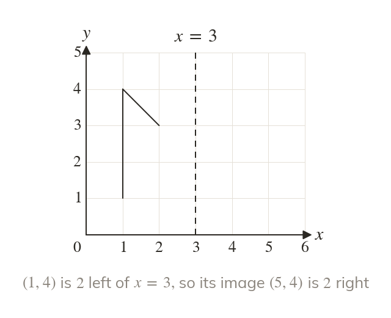
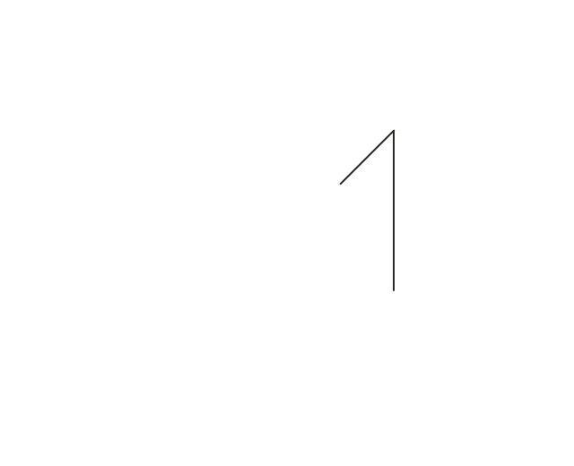
Lines as mirrors
Lines like and can be mirror lines too. Each image point is the same distance from the mirror, on the other side.
The lines and can act as mirror lines, not just the axes. Each point of the image is the same distance from the mirror line as the original, on the other side. Reflecting in a vertical line leaves every y-coordinate unchanged.
Reflection: fold along the mirror
WORKED EXAMPLE A
Reflect the flag in the line
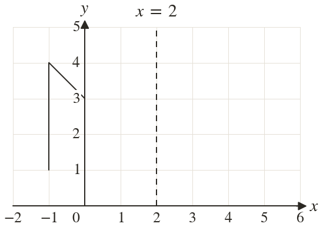
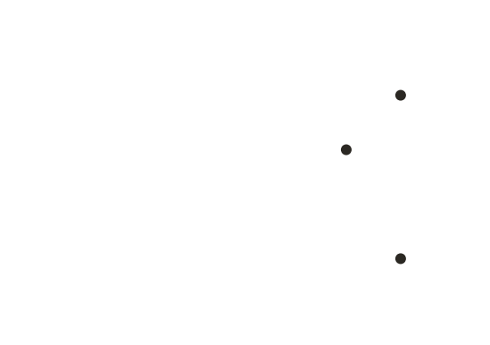
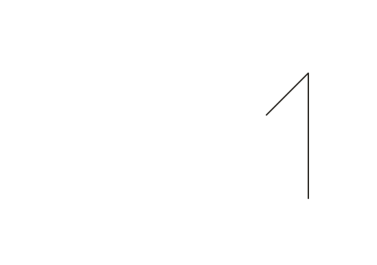
to and to : left of the line becomes right
to
Jointhe image flag
WORKED EXAMPLE B
Reflect the flag in the line
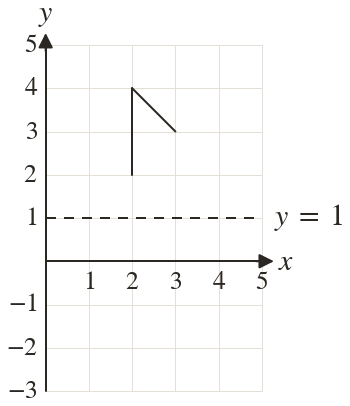
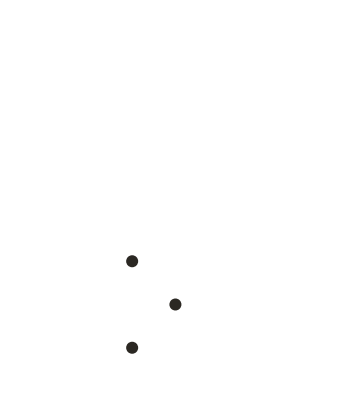
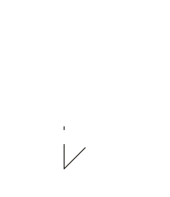
to and to : x stays the same
to
Jointhe image flag
YOUR TURN · a
Reflect the point in the line
Hint. Follow the worked example: Join
YOUR TURN · b
Reflect the point in the line
Hint. Follow the worked example: Join
03
Check your understanding
Pick an answer. If it's wrong, the feedback tells you which mistake it was.
A point is reflected in a vertical line = a. Which coordinate stays the same?
Not quite. A vertical mirror flips left and right, so x changes; y stays.
Yes. The point moves straight across, so its height, y, stays the same.
Not quite. Reflecting flips the point, so x changes; y stays.
Not quite. Moving straight across keeps y the same.
Reflect in the line
Yes. is left of so the image is right:
Not quite. Reflect in not the y-axis:
Not quite. is vertical, so the point moves across, not up.
Not quite. The image is as far past the line as the point is before it: each side.
Reflect in the line
Not quite. is horizontal, so x stays ; the point moves up.
Yes. is below the line, so the image is above:
Not quite. is below so the image is above:
Not quite. Reflect in not the x-axis:
04
Practise
mark as you go
Checkpoint.Show your teacher before you go on
1.
Reflect the triangle in Write the image's corners.
Raj reflects in the line and gets What is his mistake? Give the correct image.
Hint. Follow the worked example: Join
He reflected in the y-axis, not right of the line, so left:
EXT
(a, is reflected in the line to give Find a.
Hint. Follow the worked example: Join
is right of a is left:
05
Learn
Read each card, then follow the worked examples one step at a time.
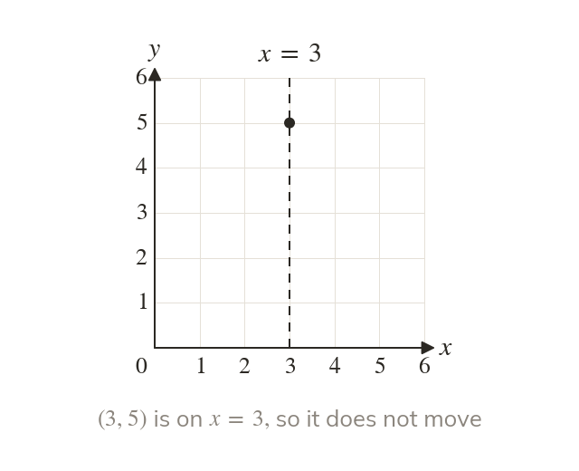
A point on the mirror
A point on the mirror line does not move.
A point that lies on the mirror line does not move when it is reflected. So the image of in the line is itself.
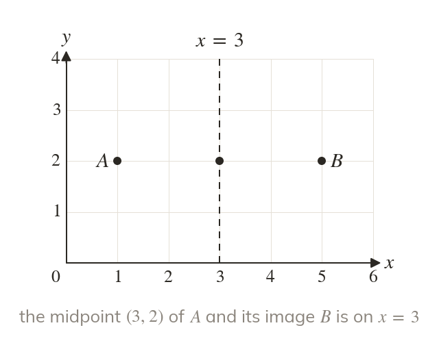
Combining ideas
The mirror line passes through the midpoint of every point and its image. So a reflection can be checked with a midpoint, joining two of the topic's ideas.
WORKED EXAMPLE C
is reflected in to give B. Find B and the midpoint of AB.
Reflect A right of the line as A is left
Average the x-values
Midpoint of AB
WORKED EXAMPLE D
Points to the right of have x-coordinates satisfying an inequality. Write it, and list the integers from to that satisfy it.
Write the inequality
Integers
YOUR TURN · c
Reflect in the line then find the midpoint of the point and its image.
Hint. Follow the worked example: Reflect A → Average the x-values → Midpoint of AB
The image is and the midpoint is
YOUR TURN · d
The line is reflected in the x-axis. Write the equation of its image.
Hint. Follow the worked example: Write the inequality → Integers
06
Check your understanding
Pick an answer. If it's wrong, the feedback tells you which mistake it was.
Which point does not move when it is reflected in the line ?
Yes. is on the line so it stays put.
Not quite. is vertical. has so it's off the line.
Not quite. is away from so it moves.
Not quite. is away from the line, so it moves to
is reflected to What is the mirror line?
Not quite. Only changed, so the mirror is vertical: = something.
Not quite. The mirror is halfway between and :
Not quite. is the distance moved. The mirror is halfway:
Yes. Halfway between and is
The line shown is reflected in the y-axis. What is its image?
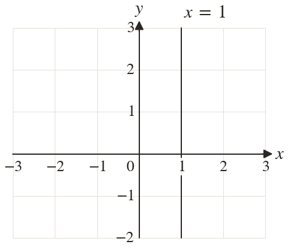
Not quite. It's away from the y-axis, so it moves to the other side:
Not quite. Reflecting in the y-axis keeps it vertical:
Not quite. A vertical line stays vertical:
Yes. is right of the y-axis, so its image is left:
07
Practise
mark as you go
Checkpoint. is reflected in the line to give B.Show your teacher before you go on
1.
Find B.
Hint. Follow the worked example: Reflect A → Average the x-values → Midpoint of AB
A is below so is above:
2.
Find the midpoint of AB.
Hint. Follow the worked example: Reflect A → Average the x-values → Midpoint of AB
3.
Find the equation of the line through and .
Hint. Follow the worked example: Reflect A → Average the x-values → Midpoint of AB
1
is reflected in to give B. Find B and the midpoint of AB.
Hint. Follow the worked example: Reflect A → Average the x-values → Midpoint of AB
Midpoint: on the mirror line
2
is reflected to What is the mirror line?
Hint. Follow the worked example: Reflect A → Average the x-values → Midpoint of AB
Halfway:
3
The line is reflected in the y-axis. Write the equation of its image.
Hint. Follow the worked example: Reflect A → Average the x-values → Midpoint of AB
4
Write an inequality for the y-coordinates of points above List the integers from to that satisfy it.
Hint. Follow the worked example: Reflect A → Average the x-values → Midpoint of AB
5
Factorise
Solve
Hint. Follow the worked example: Reflect A → Average the x-values → Midpoint of AB
so
6
Find the equation of the line through and and the midpoint of the two points.
Hint. Follow the worked example: Reflect A → Average the x-values → Midpoint of AB
Midpoint:
7
Kim says the mirror line between and is What is her mistake? Give the correct line.
Hint. Follow the worked example: Reflect A → Average the x-values → Midpoint of AB
is the distance between them, not the halfway pointHalfway:
EXT
The rectangle is reflected in the x-axis. Find the image's corners and the equation of its top side.
Hint. Follow the worked example: Reflect A → Average the x-values → Midpoint of AB
Top side:
08
Exit ticket
On paper, on your own, then check
1
A point is reflected in the line Which coordinate stays the same, and why?
The x-coordinate: the point moves straight up or down across the horizontal line.
2
Reflect in the line
3
is reflected in the line Find its image, and the midpoint of the point and its image.
The image is and the midpoint is
Finished? Next lesson: 7.16.1 Decimal Place Value and Rounding.
09
How did it go?
Be honest: it's just for you
For each skill, tap the one that is true for you today. Your Revise pages start with anything you mark Not yet.
Reflect a shape in a horizontal or vertical line given by its equation.
Solve mixed problems combining inequalities, coordinates, graphs and factorising.
Your ratings are saved on this device only.
Practise more
After the lesson, or whenever you want more
Dr Frost
Log in, then search for a code to practise that skill.
278aReflect a shape against a vertical or horizontal line with a given equation.
153bReflect a shape in a vertical or horizontal line drawn on axes.
265bFind the midpoint of two points given as coordinates.